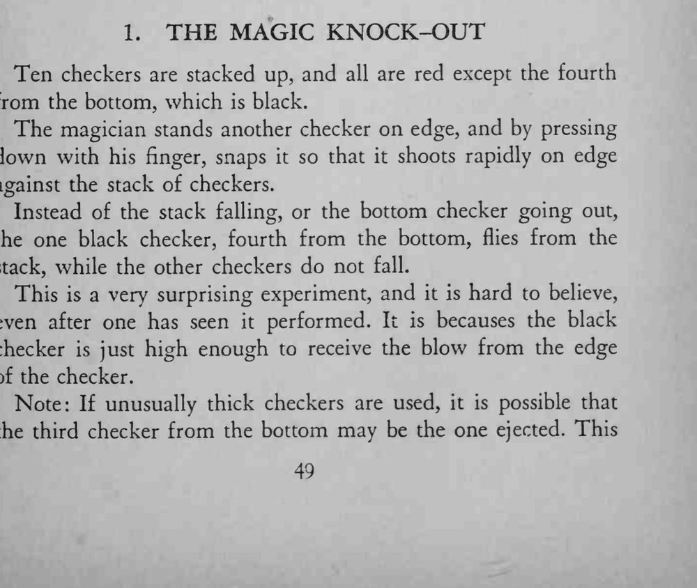
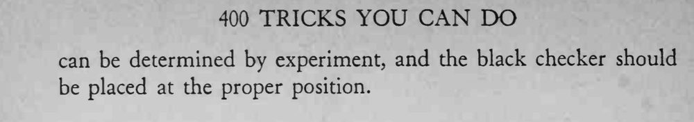

十枚棋子叠成一柱，魔术师用手指弹出另一枚棋子撞上去，从下数第四枚黑棋应声飞出，整柱棋子却纹丝不动。
若用的是特别厚的棋子，被弹出的可能是从下数第三枚，需先试验再确定黑棋位置。


Ten checkers are stacked up, and all are red except the fourth from the bottom, which is black. The magician stands another checker on edge, and by pressing down with his finger, snaps it so that it shoots rapidly on edge against the stack of checkers. Instead of the stack falling, or the bottom checker going out, the one black checker, fourth from the bottom, flies from the stack, while the other checkers do not fall. This is a very surprising experiment, and it is hard to believe, even after one has seen it performed. It is becauses the black checker is just high enough to receive the blow from the edge of the checker. Note: If unusually thick checkers are used, it is possible that the third checker from the bottom may be the one ejected. This can be determined by experiment, and the black checker should be placed at the proper position.